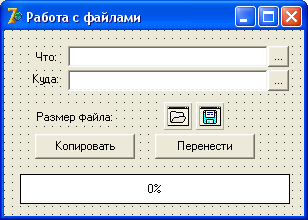

Перенос файлов (ч. 1)
В жизни каждого программиста не раз встречается необходимость написать приложение, которое могло бы обеспечить стандартные функции работы с файлами – копирование, перенос, удаление, и прочее.
Сегодня мы будем создавать программу, которая не только все это делает, но еще и выводит сообщение о размере файла, и показывает индикатор копирования.
Файл будем копировать побайтово, точнее, использовать буфер копирования, в который будем считывать символы.
Создайте новый проект.
Форму сразу же переименуйте в fMain, в свойстве Caption напишите "Работа с файлами" а проект сохраните в новую папку под именем "FileManager".
Стиль формы сделайте bsDialog, а положение формы – poDesktopCenter.
Далее, установите на форму компонент Label, в свойстве Caption которого напишите "Что:".
Рядом установите Edit, и удалите из него текст.
В этот Edit мы будем заносить исходный файл, или что мы собираемся копировать или переносить.
Ниже установите еще по одному Label и Edit.
У Label напишите "Куда:", а у Edit удалите текст.
Оба Edit немного расширьте, чтобы могли уместиться имена файлов с длинными адресами.
Ниже установите еще один Label, и в нем напишите: "Размер файла:".
Ниже будут две кнопки – "Копировать" и "Перенести".
Еще ниже установим индикатор копирования.
Обычно для таких целей устанавливают индикатор ProgressBar с вкладки Win32.
У него за показ процентного отношения отвечает свойство Position.
Установите этот компонент и попробуйте этому свойству присваивать разные значения от 0 до 100, чтобы посмотреть, как изменяется внешний вид компонента.
Однако мы для этих целей воспользуемся другим компонентом, поэтому удалите ProgressBar и перейдите на вкладку Samples.
Там выберите компонент Gauge, и установите его на форму.
Как видите, по умолчанию Gauge имеет квадратную форму.
Свойству Height присвойте значение 30, а свойству Width – 270.
Таким образом, мы придали Gauge горизонтальную направленность.
Этот компонент не только выглядит привлекательней предыдущего, но также показывает процент выполненного действия!
За этот процент отвечает свойство Progress, попробуйте присвоить ему разные значения от 0 до 100.
Каким именно компонентом пользоваться в таких случаях – дело вкуса каждого программиста.
Но вы должны знать, что в стандартной поставке Delphi есть два компонента, которые выполняют это действие.
Верните Progress в ноль.
Вы, наверное, уже успели заметить, что компонент по умолчанию окрашивается в черный цвет.
Это немного мрачно, поэтому в свойстве ForeColor выберите темно-синий цвет.
Для того, чтобы пользователь не вводил много лишнего текста, облегчим ему работу и установим два диалога – OpenDialog и SaveDialog.
А для их вызова справа от компонентов Edit установите по одной кнопочке, ширину и высоту которых сделайте такой же, как высота Edit, то есть, 21, чтобы кнопочки получились квадратными.
В результате, компонент Edit и стоящая справа от него квадратная кнопочка кажутся одним элементом интерфейса.
У вас должна получиться форма примерно с таким интерфейсом:
Впрочем, вы самостоятельно можете разработать дизайн программы, главное, чтобы интерфейс был понятным пользователю, и компоненты на форме располагались красиво.
Функция переноса файла отличается от функции копирования только тем, что в конце работы мы удалим исходный файл, следовательно, для переноса будем вызывать процедуру копирования, чтобы не писать дважды один и тот же код.
Для того, чтобы не путаться при написании кода, переименуйте верхний Edit в Otkuda, а нижний – в Kuda (свойство Name).
Так мы точно будем знать, где и что у нас находится.
Теперь займемся написанием кода программы.
Для начала объявим процедуру, которая будет побайтово копировать файл.
Ранее мы уже вводили в программы собственные функции и процедуры.
Мы их нигде не объявляли, а просто описывали выше того места, откуда в дальнейшем вызывали.
Этот способ имел один минус – такая процедура не являлась частью объекта Форма, и для того, чтобы обратиться к какому-нибудь компоненту, нам приходилось вначале обращаться к форме, например:
Form1.Edit1.Text
Однако собственную процедуру или функцию можно сделать частью формы, если вначале ее объявить.
Делается это в разделе private, сразу под комментарием:
private
{ Private declarations }
procedure myCopy;
Теперь нашу процедуру можно вызывать из любой части формы.
Если бы мы описали ее в разделе public, то ее можно было бы вызывать и из других модулей.
Мы объявили эту процедуру в объекте TfMain, чтобы можно было обращаться к ней из любого места программы и напрямую использовать компоненты формы.
Саму процедуру напишем в разделе implementation, после директивы компилятору {$R *.dfm}.
Обратите внимание, что имя процедуры должно начинаться с обращения к имени формы:
procedure TfMain.myCopy();
var
f1, f2: File; // первый и второй файл
cop: array [1..2048] of Char; //буфер копирования
sizefile, sizeread: Int64; //размер файла и размер прочитанного
colRead, colWrite : Integer; //прочитано и записано
fOtkuda, fKuda : String; //адреса и имена файлов
begin
//даем компилятору директиву, чтобы не отслеживал ошибки ввода-вывода:
{$I-}
//проверяем, указаны ли файлы. если нет - выходим
if (Otkuda.Text='') or (Kuda.Text='') then begin
ShowMessage('Укажите какой файл копировать/переносить, и куда');
Exit;
end; //if
try
//связываем файловые переменные:
AssignFile(f1, Otkuda.Text);
AssignFile(f2, Kuda.Text);
//открываем первый файл для чтения:
Reset(f1, 1);
//определяем его размер в переменную:
sizefile := FileSize(f1);
//отображаем размер файла в килобайтах:
Label3.Caption := 'Размер файла: '+IntToStr(Round(sizefile / 1024)) + ' Кб.';
//создаем или перезаписываем второй файл:
Rewrite(f2, 1);
//делаем, пока не достигнут конец исходного файла
colRead := 0;
colWrite := 0;
sizeread := 0;
Screen.Cursor := crHourGlass; //песочные часы
while colRead = colWrite do begin
BlockRead(f1, cop, SizeOf(cop), colRead);
if colRead = 0 then break;
//двигаем индикатор копирования
BlockWrite(f2, cop, colRead, colWrite);
sizeread := sizeread + colRead;
Gauge1.Progress := Round(100*sizeread/sizefile);
end; //while
Screen.Cursor := crDefault; //обычный вид курсора
finally
CloseFile(f1);
CloseFile(f2);
end; //try
//исправляем дату
fOtkuda := Otkuda.Text;
fKuda := Kuda.Text;
PravkaDate(fOtkuda, fKuda);
if IOResult <> 0 then
Application.MessageBox('Ошибка при копировании файла!', 'Внимание!!!',
MB_OK+MB_ICONERROR)
else ShowMessage('Копирование успешно завершено!');
//включаем обработчик компилятором ошибок
{$I+}
end;
Итак, что нового для нас в этом коде?
Во-первых, директивы компилятору.
Директива {$I-} отключает обработку компилятором ошибок ввода-вывода (Input-Output), нам это необходимо, чтобы получить результат – была ошибка или нет.
Ниже мы вновь включаем эту обработку: {$I+}.